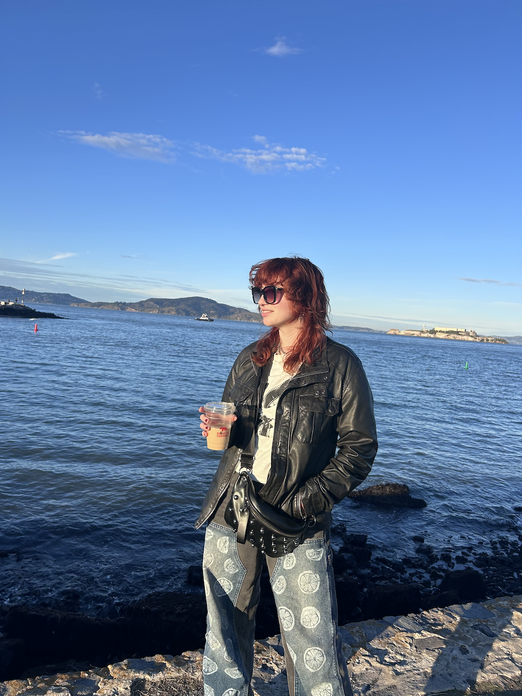

Hi, I'm Katya
I’m a graphic designer focused on branding, UI/UX, and creating digital systems that feel human. I hold a BFA in Graphic Design from Portland State University and a UI/UX certificate from UC Berkeley, with experience across both print and digital environments.
I’ve worked on projects ranging from websites for educators to campaign materials and brand systems for small businesses. My goal is always to create work that’s visually strong, clear, usable, and rooted in thoughtful strategy.
I specialize in both design and front-end development spaces, using tools like Figma, Adobe CC, HTML/CSS, and WordPress to bring ideas from concept to launch. I enjoy collaborating with editors, developers, and other creatives to build meaningful things.
Outside of design, I love crafting, painting, exploring nature, and playing music. Those tactile and expressive moments often influence my work—shaping my approach to texture, color, and movement.
I’m currently seeking full-time roles, freelance projects, or collaborations with purpose-driven, inclusive teams. Let’s create something impactful together.
Get in touch